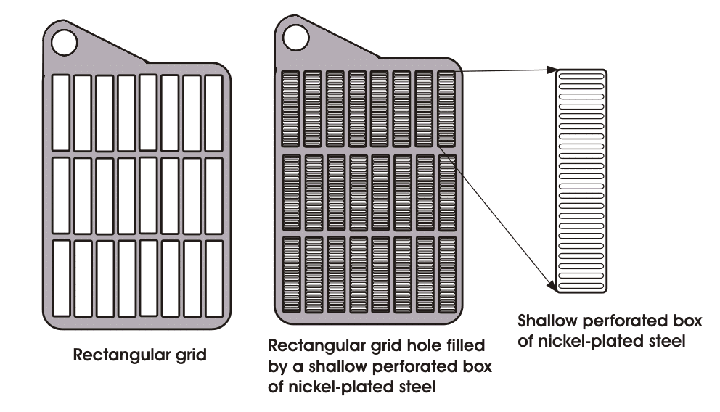

• Construction
• Operation
• Characteristics
• Advantages
• Disadvantage
• Application
• Maintenance and Care
Which battery are becoming more popular day by day as there is a huge scope of development to turn them into high energy density battery for electric vehicle? The answer would be Nickel iron battery or Edison battery . In a single word, Ni-Fe battery is a very robust battery . This battery has very high tolerance to overcharging, over discharging, short circuiting etc. This battery can perform equally well even if it is not being charged for a long period. Due to its heavy weight, this battery is used in those applications where weight of the battery does not matter, for example, in solar energy system, in wind energy system etc. as backup. Durability and life span of a nickel iron cell is much higher than lead acid battery , but still nickel iron battery has lost its popularity because of its high manufacturing cost.
Let's have a look at some specific features of nickel iron (Ni-Fe) or Edison battery .
This battery can have 30 to 50 kW energy delivery capacity per kg of its weight. Charging efficiency of this battery is about 65%. That means 65% of input electrical energy gets stored in this battery as chemical energy during its charging process. Discharging efficiency is about 85%. That is, 85% of stored energy can be delivered to the load as electrical energy and the rest gets discharged due to self discharging of the battery . If the battery is kept unused for 30 days, it will lose only 10% to 15% of its storage energy due to self discharging. Nickel Iron battery have significantly long life span and it is about 30 to 100 years. This period is much longer than normal life span of a lead acid battery which is about 10 years. Nominal voltage rating per nickel iron cell is 1.4 V.
Nickel Iron Battery
The basic components used in Nickel iron battery are nickel(III) hydroxide as cathode, iron as anode and potassium hydroxide as electrolyte. Nickel sulphate and Ferrous sulphide are added to the active material.

Thomas Edison
batteries "> Construction of Edison batteries
The capacity of Ne-Fe cell depends upon size and number of positive and negative plates. The appearance of both positive and negative plates in this type of battery cells is same. Both of the plates consist of rectangular grid made of nickel-plated iron. Each of the grid holes are filled with shallow and finely perforated nickel-plated steel box.
Although both of the plates are appeared to be same, but they contain different active materials. Perforated nickel-plated steel boxes of positive plates contain a mixture of oxide of nickel and pulverized carbon and some of the negative plates contain fine grains of oxide of iron with fine dust of carbon. In both the plates, fine dust of carbon, mixed with active materials, helps to increase electrical conductivity. 20% diluted caustic potash is used as electrolyte.
battery plate" width="720" height="412" class="aligncenter size-full wp-image-6477" />
Nickel plated iron gets used to make the vessel containing electrolyte and electrodes. Ebonite sticks are placed between the plates of different polarities to prevent them from coming into direct contact and causing short circuit. There is another specialty in the construction of Edison battery or nickel iron battery , that the number of negative plates is one more than that of the number of positive plates, and the extreme negative plate is electrically connected to the container. Plates of same polarities are welded to a common strap and they make a cell, and combining several cells, the battery gets constructed.
batteries
or Edison batteries " width="230" height="591" class="size-full wp-image-2704" /> Nickel Iron batteries or Edison batteriesbatteries "> Operation of Nickel Iron batteries
We already know that the main operation of the nickel iron battery is the chemical reaction within the battery which is known as electrolysis. Electrolysis is nothing but the chemical reaction taking place when there is electric current flow, it can be both cause and result of the chemical reaction. The chemistry of nickel iron cell is very much complicated because the exact formula for positive active material is not well established yet. But if we can assume that the material to be Ni(OH)3, then we can explain it to some extent. During charging, nickel compound at the positive plates, gets oxidized to nickel peroxide. Charging process changes iron compound to spongy iron in negative plates.
In the fully charged condition, the active material of the positive plates is nickel hydroxide [Ni(OH)3], while that in pockets of the negative plate is iron, Fe. When the cell delivers electric current to load, the active material of the positive plate changes from Ni(OH)3 to Ni(OH)2 and that of the negative plate changes from iron to Ferrous hydroxide (Fe(OH)2). The electrochemical process in the Edison battery can be expressed by the equation
The equation expresses both the phenomenon of charging and discharging. The right side flow of the equation is the reaction of the discharging phenomenon and the left side flow of the equation expresses the charging phenomenon. The reaction occurs by transfer of electrons through the external circuit to the positive plate during discharge. There is a provision for giving off the corrosive fume which is generated during the electrolysis inside the battery , so that no special care is needed in mounting the cell.
batteries ">Characteristics of Nickel Iron batteries
The emf of a fully charged Edison battery is 1.4 V. The average discharge voltage is about 1.2 V and the average charging voltage is about 1.7 V per cell. The characteristics of this type of battery is shown below in the figure.
The voltage characteristics of the Nickel Iron battery are similar to that of lead–acid cell. As the fully charged emf 1.4 V and it slowly decreases to 1.3 V and then very slowly to 1.1 or 1.0 V during discharge. From the graph, we can see that there is no lower limit for discharging emf beyond which the output of the battery will be zero. That’s why after a certain period the battery stop to any output. The emf of a battery is directly proportional to the temperature, which means the emf of the battery increases with increase in temperature.
The average time of charging of a battery is 7 hours and discharging time is 5 hours. Another characteristic of Edison battery is that continuous operation at higher temperature decreases the life of the battery , same thing happens if the battery is charged for more than the average time of charging.
The ampere-hour and watt-hour efficiency of this nickel iron battery are 85 % and 60 % respectively. At 4°C temperature, the capacity of Edison battery falls to zero, that’s why the battery should be heated up before operation though during operation the I2R loss keeps the battery hot and running.
batteries ">Advantages of Nickel Iron batteries
There are various Advantages of Edison battery , these are listed below.
- The weight of these battery is lower than other types of battery because they need less amount of electrolytes and plates are also lighter.
- The service life of the battery is much higher because of various provisions made.
- These types of battery are stronger, have rugged construction because of steel body. For this reason they are not affected by vibrations, jolts or shocks, heavy currents and do not suffer during short circuits.
batteries "> Disadvantages of Nickel Iron batteries .
There are certain disadvantages of Edison battery , like the initial cost needed for making these battery are pretty high as the materials used are highly priced. Another drawback of these type of battery is the low efficiency. For this few reasons the use of these battery are restricted, they are mainly used in the areas where high mechanical strength, lightness, freedom from acid fumes are needed.
batteries ">Application of Nickel Iron batteries
From the above discussions, we already know that the said battery are mainly used in extreme conditions or it can be said that where there is no other way than using Edison battery . These battery are mainly used in industrial trucks for propulsion purpose. They are also used in mine locomotives and for railway, car lighting and air conditioning because they have pretty high mechanical strength.
batteries "> Maintenance and Care of Nickel Iron batteries
We already know that the these battery need lower maintenance than other types of alkaline battery . The main precaution taken for these types of battery is to maintain the level of electrolyte present inside the battery . Because, if the level of the electrolyte becomes lower than the plates inside, the battery get damaged very quickly and the battery suffer irreversible damage. To prevent this, the battery should get filled with distilled water at least once in a week. Another maintenance which is needed for these battery is to change the electrolyte solution time to time, whenever the specific gravity of the solution falls below 1.16 the electrolyte gets changed. Lastly, it is important to consider that the battery should be discharged to zero volt before taking it out for servicing for a long period.
teries by
by